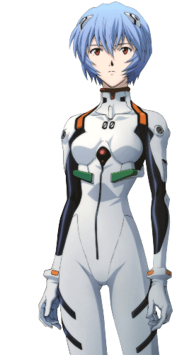
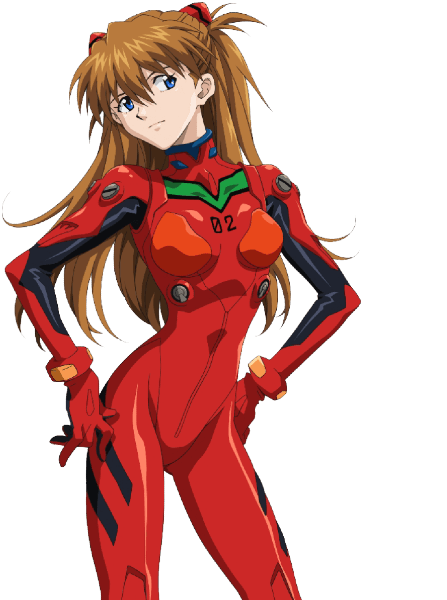
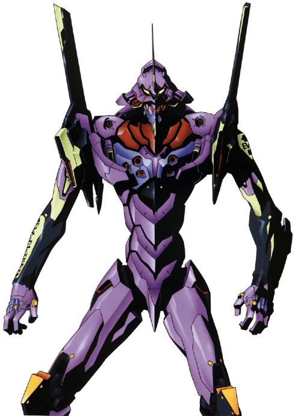

Neon Genesis Evangelion (新世紀エヴァンゲリオン, Shin Seiki Evangerion), es una adaptación al manga del anime homónimo escrita y dibujada por Yoshiyuki Sadamoto. Se trata de una narración alternativa de la historia de la serie de TV, constituyendo una continuidad separada. Comenzó en diciembre de 1994 siendo publicado por la editorial Kadokawa Shoten en su revista Shonen Ace, llegando a su fin en junio de 2013. Está compuesto por 96 capítulos o "stages" recopilados en 14 volúmenes. Aunque se publicó inicialmente antes del debut del anime con el fin de promocionarlo, con el tiempo fue rápidamente adelantado por la serie de TV y concluyó 16 años después de la película The End of Evangelion.
Neon Genesis Evangelion fue creada después de una reunión de Hideaki Anno y King Records realizada en 1993. Aunque primero se concibió el anime, se anticipó la publicación del manga. La idea era aumentar el interés del público sobre la inminente serie, mientras aún se encontraba en producción. Debido a varios retrasos, finalmente esta última se emitió el 4 de octubre de 1995, diez meses después del estreno del manga. Para entonces, la trama del manga de Sadamoto ya había alcanzado la batalla contra Ramiel, arco argumental que luego correspondería a sus tres primeros volúmenes y los seis primeros episodios del anime. Sin embargo, este rápidamente sobrepasaría al manga, al punto de que los stages correspondientes al episodio 08 y al cuarto tomo no serían publicados hasta un año después de haber terminado el anime. Sadamoto continuaría trabajando lentamente en el manga mientras dividía su tiempo junto a otros proyectos, publicando aproximadamente un nuevo volumen (uno de los 12 planeados inicialmente) cada un año y medio. A pesar de que el manga había estado activo durante más de 15 años, sólo se habían publicado 13 tomos. La razón se debe a que mientras la periodicidad aparente era un nuevo stage cada edición mensual de la revista Shōnen Ace, el ritmo real de Sadamoto era irregular. Por ejemplo, pasaron dos años entre la publicación en Japón del volumen cuarto y quinto. En 2008 se anunció que el manga Neon Genesis Evangelion estaba llegando a su final. En julio de 2009 fue trasladado a Young Ace, una nueva revista seinen de la editorial Shoten. Siguió publicándose hasta la entrega de enero de 2010, cuando Sadamoto paralizó su publicación para poder dedicarse a trabajar de lleno en la película de Rebuild of Evangelion. La edición de diciembre de 2010 de Young Ace anunció que reanudaría en "invierno" (inicios de 2011) y luego la entrega de abril de 2011 anunció que el próximo stage sería publicado el 4 de ese mismo mes. El 12 de febrero de 2012 se publicó la primera mitad del stage 90, el cual renarró el Tercer Impacto visto en el episodio 26' de The End of Evangelion y es supuestamente el último capítulo. El 2 de mayo de 2012 Kadokawa Shoten anunció que el décimo tercer volumen del manga sería publicado el 2 de noviembre del mismo año. En respuesta Anime News Network notó que "ni Sadamoto ni Kadokawa han confirmado que el volumen 13 será el último". Finalmente, en junio de 2013, luego de 18 años de publicación e interrupciones, se publicó el último capítulo de la serie. Posteriormente, se anunció la recopilación del décimo cuarto y último volumen con material original extra para el 20 de noviembre de 2014.
Bajo la supervisión de Hideaki Anno, Sadamoto fue el diseñador de los personajes para el anime original. Su versión de los personajes en el manga difiere ligeramente de sus homólogos del anime. Shinji Ikari: En el manga, los ojos de Shinji son marrones en lugar de grises azulados. En términos de personalidad, es algo menos introvertido, pero posee un marcado odio hacia su padre, hasta el punto de que al disolverse en su EVA se imagina a sí mismo asesinándole. En la base de NERV, Shinji se entera de los verdaderos motivos de su padre: designarlo como piloto del Evangelion Unidad 01. Shinji se niega al ver que su padre sólo quiere utilizarlo. Ante esta situación, Gendo decide utilizar a Rei Ayanami, que está gravemente herida y envuelta en vendajes. Este acto de crueldad hace cambiar de parecer a Shinji, que finalmente decide pilotar la Unidad-01. A bordo del Evangelion, Shinji es dejado inconsciente al poco tiempo de comenzar la batalla, pero súbitamente el EVA entra en modo berserk, actúa por sí mismo y destruye al ángel.  Rei Ayanami: Es más humana en el manga, siendo más habladora y más cercana a la gente que le rodea, sobre todo a Shinji. El manga también muestra parte de sus pensamientos y sentimientos (como su relación con Shinji), algo que en el anime sólo es sugerido, Rei vive en una calle desolada de Tokio-3, en el solitario apartamento número 402. Shinji visitará dicho apartamento para entregarle una identificación, lo cual le servirá para ir relacionándose con ella muy lentamente. Este apartamento demuestra que Rei lleva una vida monótona y aislada. Además, resulta ser una representación de la habitación subterránea en la que Rei nació y se crió, según dice Ritsuko Akagi.  Asuka Langley Sohryu: La versión del manga de Asuka no es tan verbalmente abusiva ni tan cerrada como su contrapartida, pero sigue siendo difícil cohabitar con ella. Asuka presenta una imagen de "niña buena" hacia sus superiores, fachada de la que necesita deshacerse antes de mejorar en su personalidad. Así mismo, sus sentimientos hacia Shinji son más discretos. Junto a todo ello, Asuka revela que ella es una bebé de probeta, su encuentro con Shinji y sus amigos es diferente, y es dejada en coma inmediatamente después de ser atacada por Arael. Kaworu Nagisa: es introducido antes en el manga que en el anime, lo que le permite enfrentarse a otro ángel, Armisael, al lado de Rei. Kaworu sigue siendo retratado como un desconocedor de varios aspectos de la interacción social, pero esta vez creando una suerte de alivio cómico que no existe en el anime; a pesar de ello, su presencia es más inquietante. Debido a esto, Shinji desconfía de él, y no tiene la misma relación que en el anime. Según Sadamoto, la aproximación personal de Kaworu hacia Shinji se debe a haber observado la de Rei hacia el joven Ikari. Misato Katsuragi: Misato es la única sobreviviente de los que estuvieron allí durante tal hecho. Fue salvada por su padre, que la introdujo en una cápsula de salvamento. Debido a esto, quedó traumatizada y durante dos años padeció afasia (pérdida del habla). Tras superar la afasia alimentó un fuerte deseo de vengar a su padre y destruir a los ángeles. Siempre lleva una cruz blanca colgada en el cuello que le dejó su padre antes de morir. Aunque Misato lo odiaba porque siempre estuvo demasiado ocupado con su trabajo para dedicarles tiempo a ella y a su madre, su sacrificio cambió su forma de verlo. De hecho, la cruz que siempre lleva le recuerda esto y cuál es su misión en la vida. Ryoji Kaji: Posee mayor trasfondo en el manga, ya que se lo explica a Shinji en un intento de hacerle volver a NERV tras la lucha contra Bardiel. Esta conversación tiene lugar en un sótano y no en su huerto. Según se comenta, Kaji trabaja para el Ministerio del Interior, y a veces, actúa a favor y en contra de Gendo Ikari y SEELE. Pues trajo de contrabando el embrión de Adán recuperado de la Antártida, para luego ingresar en el cuartel de NERV y entregarlo a Gendo. Este hecho es ignorado por SEELE. También investiga NERV, lo cual puede llegar a perjudicar a Gendo. Además, parece mantener motivaciones personales más allá de la simple lealtad a cualquier organización, hablando con frecuencia de su deseo de "encontrar la verdad". Todo esto convierte a Kaji en un personaje muy misterioso. Gendo Ikari: En el manga difiere enormemente del anime. Cuando entra en contacto con el campo AT de Adán, Gendo logra controlarlo, pero pierde la cordura y pasa a aspirar a convertirse en un dios. Durante sus estudios, conoció a Yui Ikari, con quien comenzó una relación, y el profesor Kozo Fuyutsuki, con quien entabló amistad. Muchos de los que lo conocían pensaban que su relación con Yui eran debido a sus conexiones con SEELE, sin embargo, en el trascurso de la serie y de las películas se hace ver que su relación con ella era más profunda.  Yui Ikari/Unidad-01: En adición a la presencia del alma de Yui en la Unidad-01, el aspecto angélico del EVA tiene su propia personalidad, retratada como una versión sin armadura del Evangelion. Este ser se muestra a Shinji y Rei cuando están sincronizados en el EVA, e intenta atrapar a Shinji dentro de la unidad tras la batalla con Zeruel tomando la forma de Yui y aprovechándose del deseo de Shinji de reunirse con su madre. Rei es capaz de establecer un puente mental con la parte angélica desde fuera del EVA y los dos se reconocen como conectados el uno al otro.
Tras el éxito del anime, el manga también se convirtió en un triunfo comercial: los primeros diez volúmenes vendieron más de 15 millones de ejemplares y el tomo 11 alcanzó el primer lugar en la lista Tohan, sumando un total de más de 17 millones. Particularmente, mientras el manga se acercaba a su conclusión, la expectación había alcanzado nuevos hitos: el volumen 11 entronándose en lo alto de las listas de Japanese Comic Ranking por 4 semanas seguidas, fue un logro excepcional incluso para una serie de larga duración. Por su parte, el volumen 12 debutó en el puesto número uno en la lista de Oricon al vender más de 600.000 copias. Por otra parte, el manga resultó ganador de la encuesta por fanáticos Comicker de 1996. La serie fue traducida al inglés por Viz, quien afirmó que Evangelion fue el primer manga no invertido (respetando la lectura japonesa de derecha a izquierda) en dicho idioma. En agosto de 2011, Viz anunció que el manga sería publicado digitalmente a través de su sitio web y su aplicación para dispositivos Apple. Cada stage costaría $ 1 y se publicaría uno por semana. La serie ha sido publicada en español por las editoriales Norma (España) e Ivrea (Argentina). Norma renombró la serie como Neogénesis Evangelion y ha publicado todos los tomos en papel rústico con sobrecubierta. Ivrea duplicó el número de volúmenes al dividir cada tankōbon original en dos publicaciones de cien páginas. Posteriormente publicó simultáneamente una edición "deluxe" fiel al formato y contenido original.